STUXNET: Cyber-Physical Attack Lab
☢️ Centrifuge Rotational Speed & Harmonic Stress Simulator
Select a Stuxnet operational phase to simulate the Variable Frequency Drive (VFD) output frequency and observe real-time centrifugal stress on the aluminum rotor cylinder.
Select Stuxnet Operational Phase
🎭 The 21-Second Telemetry Replay Attack: Display vs. Reality
Compare the falsified HMI screen shown to Iranian operators against the true physical catastrophe unfolding inside the cascade hall during a Stuxnet overspeed attack.
Stuxnet intercepts read packets and loops 21 seconds of pre-recorded baseline telemetry. The operator sees zero anomalies.
Aluminum rotors stretching past tensile failure limit. Supersonic shrapnel puncturing adjacent centrifuges in the cascade.
⚙️ Siemens S7 MitM DLL Proxy & Microcode Hook Inspector
Inspect how Stuxnet intercepted communication between SIMATIC STEP 7 and the S7-315 controller using dynamic link library proxying and injected Organization Blocks.
Hooked s7otbxdx.dll Execution Flow
Injected MC7 Bytecode Logic (Disassembly)
🗺️ MITRE ATT&CK for Industrial Control Systems (ICS) Explorer
Click any tactic card to view Stuxnet's specific industrial adversary technique.
T0847: Replication Media
Weaponized USB flash drives using zero-click .LNK icon rendering (CVE-2010-2568) to cross physical air gaps.
T0843: Program Download
Writing modified MC7 bytecode blocks (OB1, OB35, DB89) into Siemens S7-315 and S7-417 PLCs via S7comm.
T0856: Spoof Reporting
Replaying 21-second recorded normal telemetry loop from DB89 to deceive operators staring at WinCC screens.
T0836: Modify Parameter
Altering Variable Frequency Drive output parameters to 1,410 Hz (overspeed) and 2 Hz (resonant slowdown).
T0879: Damage to Property
Harmonic resonance induced rotor collision, destroying an estimated ~1,000 IR-1 centrifuges at Natanz.
T0851: Rootkit Filter
Signed kernel drivers (mrxnet.sys / mrxcls.sys) hiding malicious files on removable USB flash drives.
📸 Primary Source Forensic Blueprints & Visual Evidence
Click any evidence artifact to inspect high-resolution architecture diagrams and historical photographs.
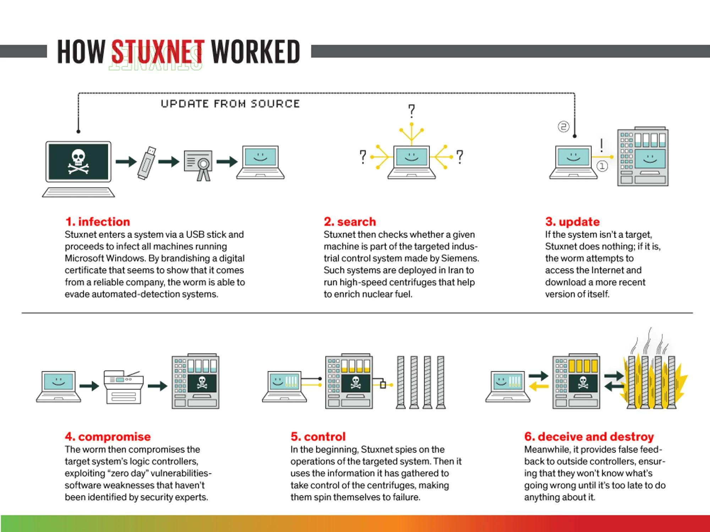
How Stuxnet Worked
High-resolution infographic: USB delivery to PLC sabotage and sensor deception.
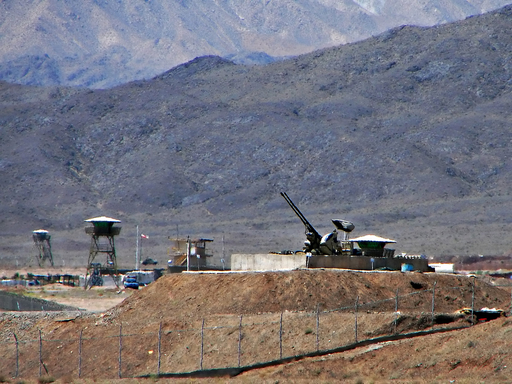
Natanz FEP Aerial Complex
Authentic satellite/aerial view of the fortified subterranean enrichment complex in Iran.
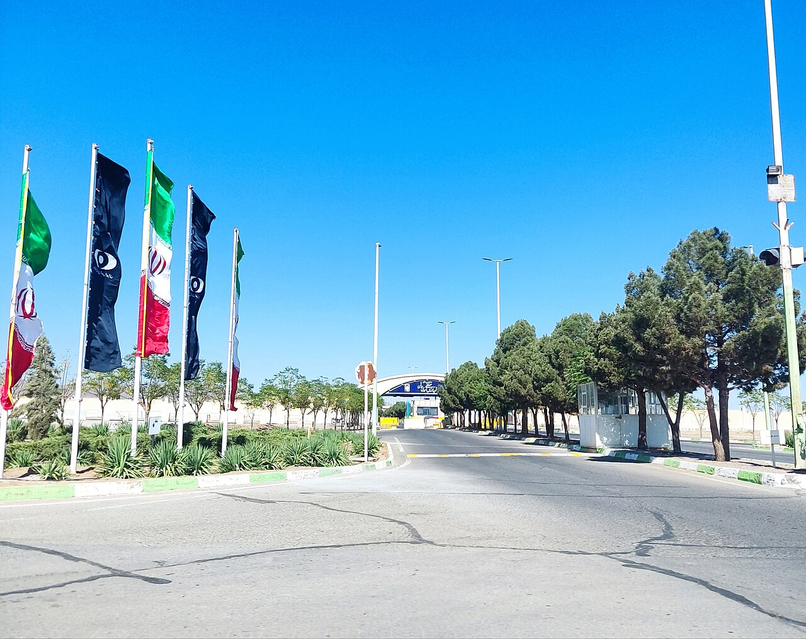
Natanz Underground Halls
Ground-level infrastructure protecting the subterranean cascade halls beneath 8m concrete.
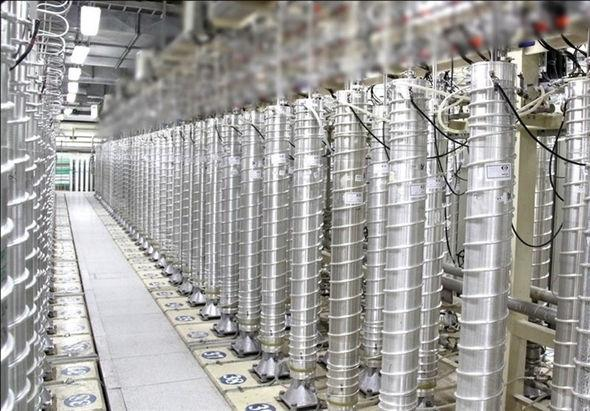
IR-1 Centrifuge Cascades
Authentic photograph of 164-centrifuge cascades inside the Natanz Fuel Enrichment Plant.
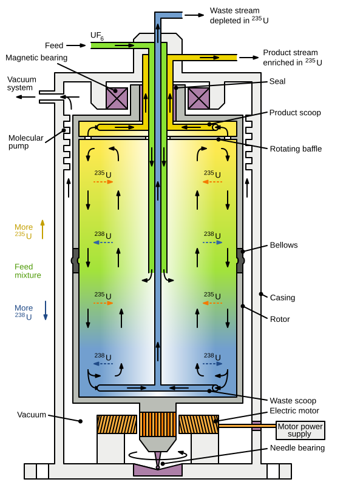
Zippe Centrifuge Vector Blueprint
Authentic schematic of the spinning rotor, magnetic bearings, and UF6 gas scoops.
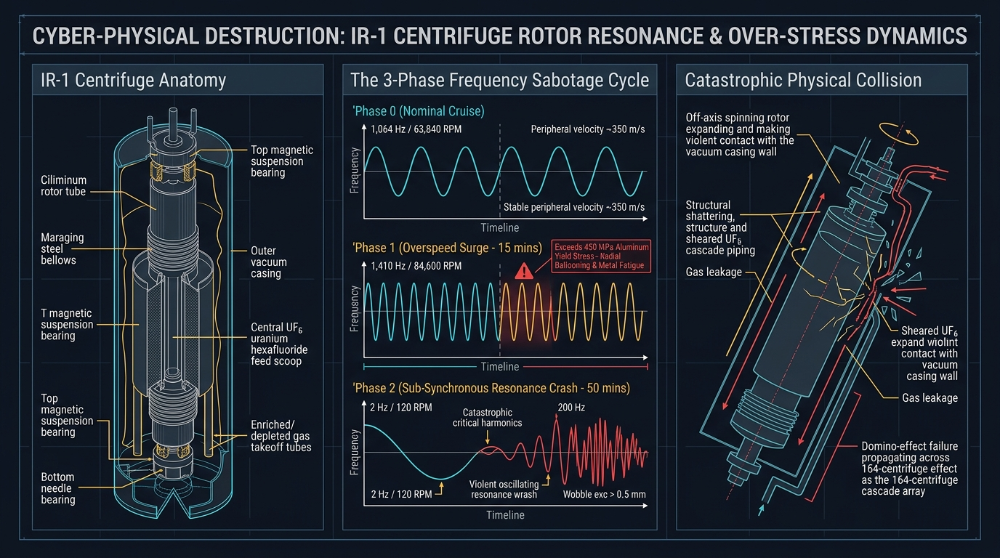
Rotor Resonance Dynamics
Mechanical blueprint: 1,410 Hz overspeed stress and 2 Hz harmonic resonance crash.
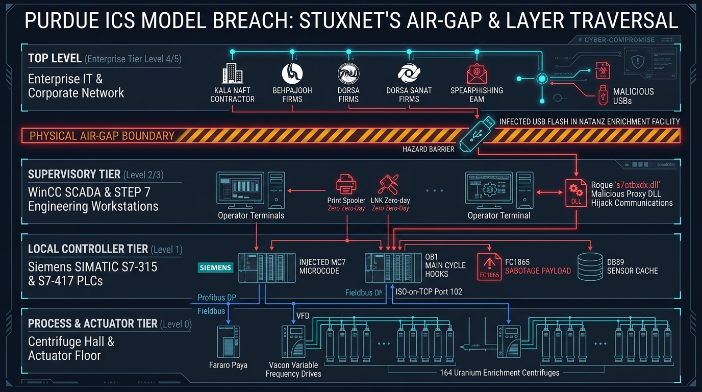
Purdue Model Layer Traversal
Cross-boundary map: Contractor infection to air gap, WinCC, PLCs, and VFDs.
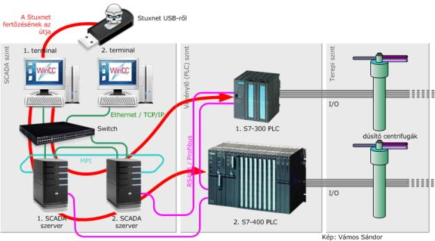
SCADA & PLC Network Topology
Industrial routing: WinCC terminals ➔ Industrial Ethernet ➔ S7-300/S7-400 PLCs.
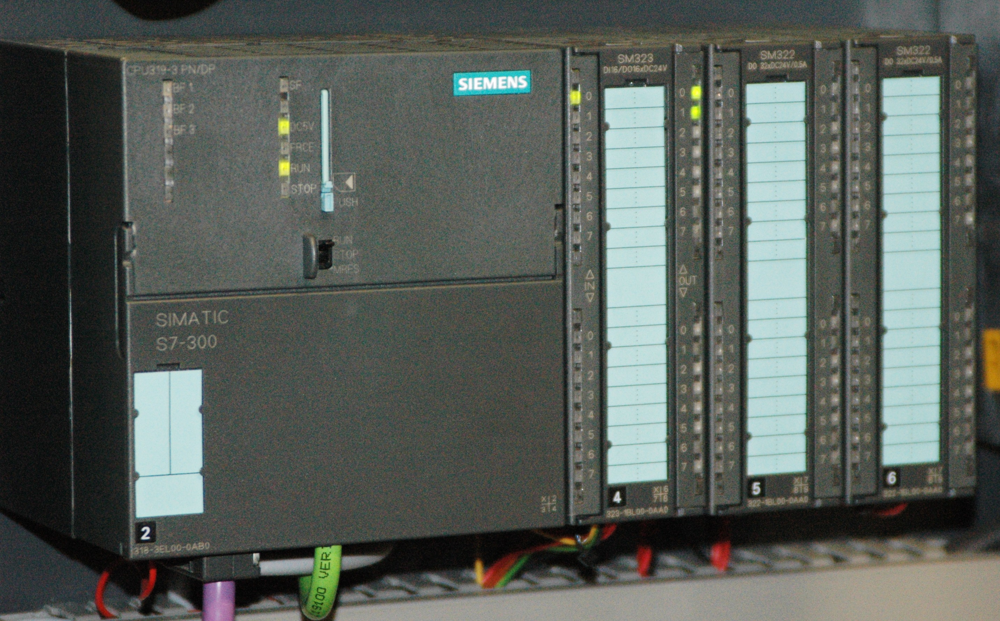
Siemens SIMATIC S7-300 Hardware
Authentic photograph of the S7-300 PLC modular rack governing centrifuge VFD speed.
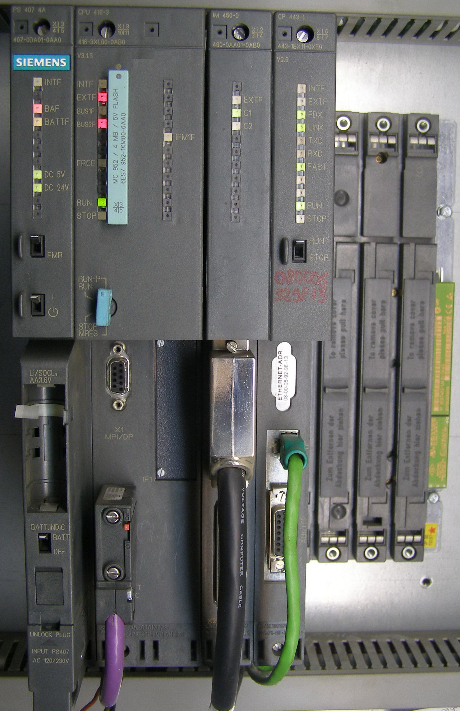
Siemens SIMATIC S7-400 Rack
Authentic photograph of the S7-400 controller governing cascade valve manifolds.
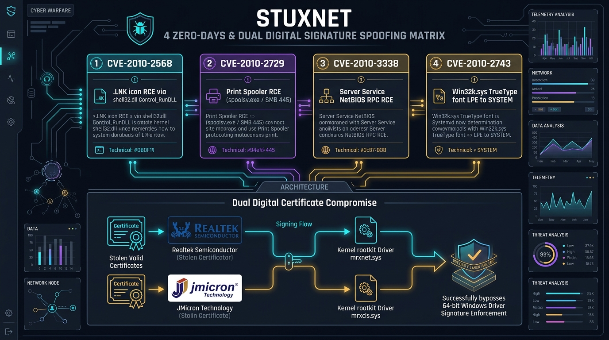
Four Zero-Days & Certificates
CVE-2010-2568, Spooler, Task Scheduler, and Win32k LPE with Realtek/JMicron certs.
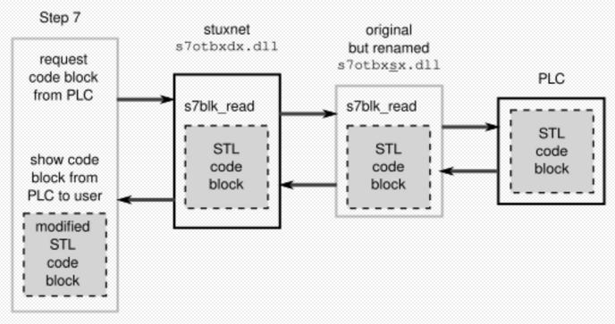
STEP 7 DLL Proxy Architecture
Replacing s7otbxdx.dll with s7otbxsx.dll to hook s7blk_read and s7blk_write.
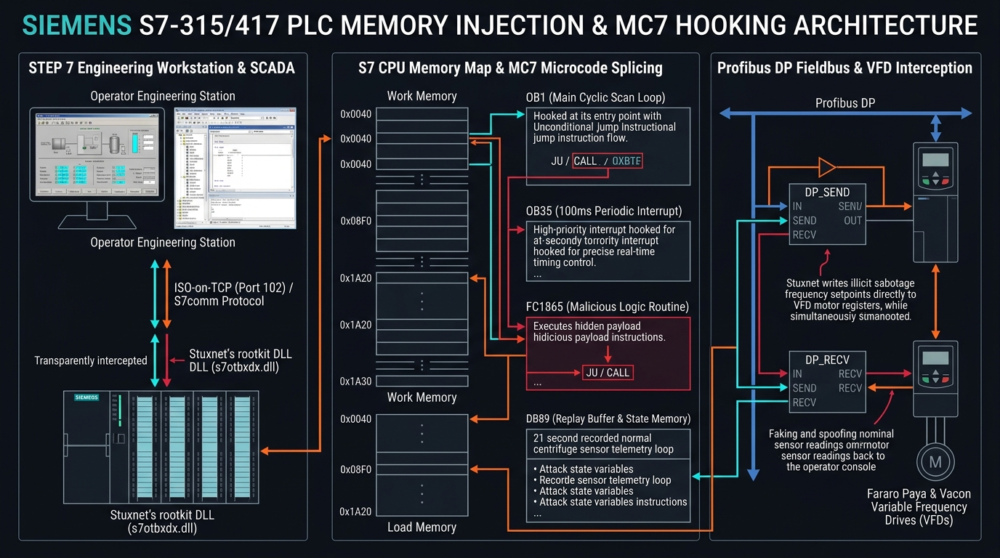
S7 Microcode Injection & Memory
OB1/OB35 hooks, FC1865 state machine, DB89 telemetry cache, and Profibus DP.
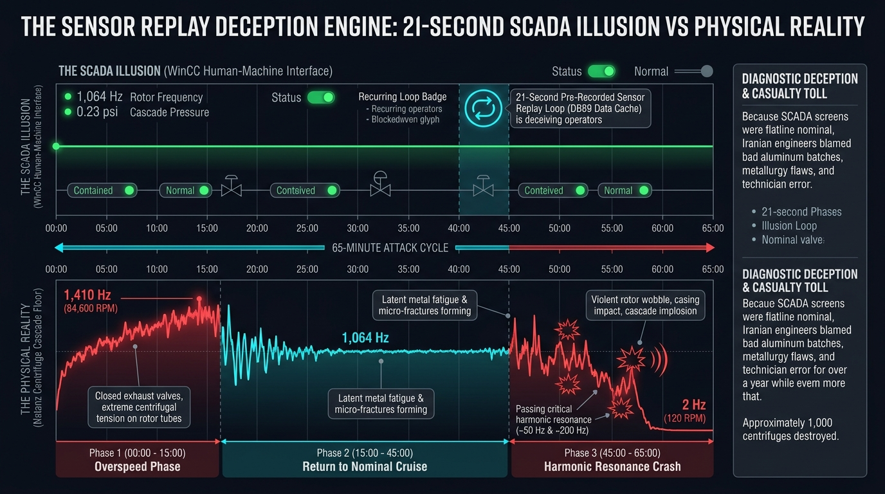
Sensor Replay Deception Timeline
65-minute comparative timeline: SCADA operator illusion vs physical cascade destruction.
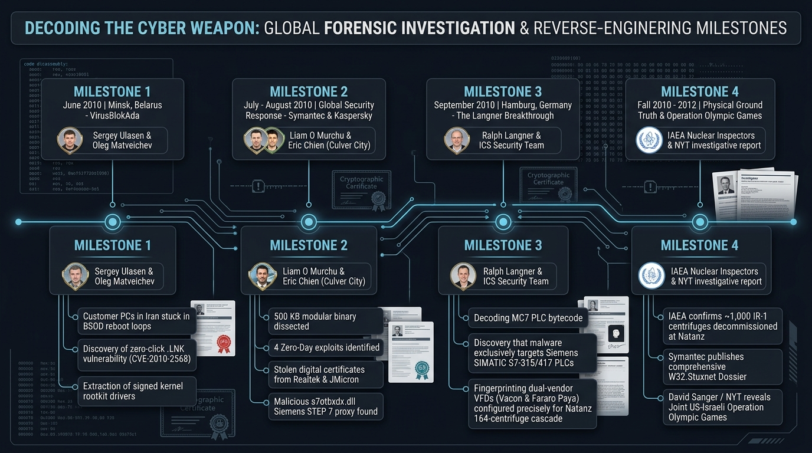
Global Forensic Roadmap
Milestones: VirusBlokAda Minsk, Symantec Culver City, Ralph Langner, and IAEA ground truth.